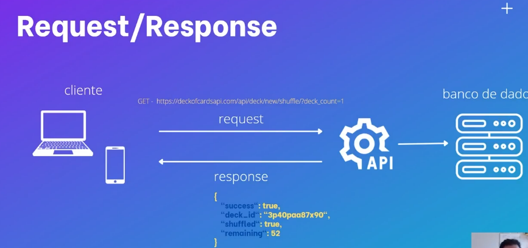
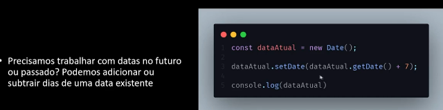
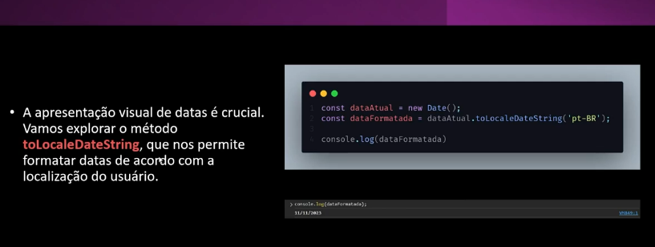
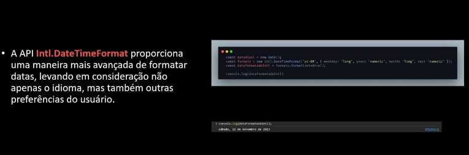
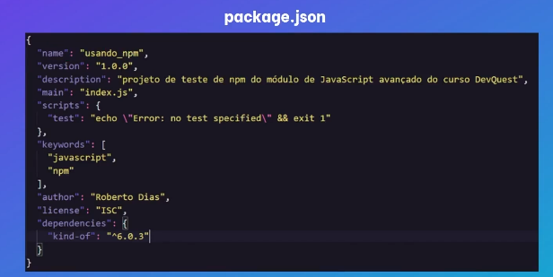
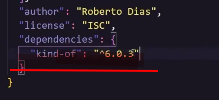
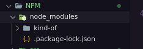

JavaScript avançado
Filter
Material de apoio
O filter é uma função que aceita outra função como parâmetro, e ela vai ser usada para filtrar. Imagine que voce tem um aray com objeto de pessoas de varias idades e queira filtrar somente as de 33 anos, seria possível fazer com laço for.
let pessoasComIdadeDe33anos = []
for(let i = 0; i < pessoas.length; i++){
if(pessoas[i].idade === 33){
pessoasComIdadeDe33anos.push(pessoas[i])
}
}
Usando o método filter fica mais fácil, como ele é um callback não será preciso criar a variável i, percorrer o array por que ele faz isso tudo sozinho, e ele gera um novo array com os valores com um número menor de elementos.
Exercício exemplo filter
Exercício apenas filter
Como no exercício é só usar o callback, usar o pessoas como parâmetro e retornar os que tem valor = a 33. Se esse filter for feito dentro de uma variável ela já irá guardar o resultado.
Map
Material de apoio
O map parece com o filter mas é usado para transformar o array em um array totalmente novo com o mesmo número de elementos. É como uma cópia desse elemento.
let NomeDasPessoas = []
for{let 1 = 0; 1 < pessoas.lenght; 1++}{
nomeDasPessoas.push(pessoas[i].nome)
}
Dessa forma seria a maneira de se fazer com o for, mas ela é muito mais verbosa do que usar o map, adicionando o nome das pessoas a ultima posição do array a medida que o index aumenta.
Exercício Map
Usando o map ele vai receber uma função como parâmetro e essa função pode-se usar o objeto percorrido como parâmetro dela. Essa função deverá retornar o resultado a variavel a qual está sendo atribuida o map, é interessante para iterar sobre objetos em um array, ou concatenar os valores desse objeto. Ele recomendou usar mais o map() que o forEach() para iterar sobre um array.
Reduce
Material de referência.
Digamos que nas ordens de compras da bolsa de valores que ficam armazenadas dentro de uma array, contem objetos com o tipo, valor e etc. Para acessar esses valores da ordem usando o for ficaria assim:
let quantidadeDeOrdens = 0
for(let i = 0; i < ordens.length; i++){
quantidadeDeOrdens += ordens[i].quantidade
}
È preciso iterar sobre o array e selecionar a propriedade dela pelo indice e propriedade.
Exercício reduce
Já usando reduce é parecido com o map retornando um novo array, mas é possível colocar qual é o index inicial ao seu fim.
Existem 2 parâmetros para o map, o objeto que irá receber, e o objeto que será iterado, confira o exercício
Para fazer a iteração e atribuir o valor com uma variável com for, é preciso colocar o sinal += pois se não será substituida, mas no reduce, já que ele cria um array é apenas colocar o + que não irá substituir os valores de dentro.
Interpolação de string
Antes do es6 não existia a interpolação, fazendo com que para concatenar é preciso interromper a string e colocar um + para inserir outros valores.
Exercício interpolação de string
Agora é possível colocar o texto com a variavel sem usar o +, apenas colocando a variável dentro de um cifrão com chaves na frente e a expreção dentro de crases. Também seria possivel chamar função dentro das crases
Desustruturação de objetos e arrays
Material de apoio
Permite extrair variáveis de objetos ou arrays. Na declaração já mapeie as propriedades do objeto para essas variáveis.
Exercício desestruturação
let pessoa = {nome: 'Roberto', sobrenome: 'Dias', idade: 33 }
let nome = pessoa.nome
let idade = pessoa.idade
console.log(nome)
console.log(idade)
essa é a forma que tem sido usada para expressar um objeto, mas com a desestruturação ficará um pouco mais prático.
let {nome: nome, idade:idade} = pessoa
Fazendo dessa forma já informo o javascript que estou fazendo uma desestruturação para o objeto pessoa. E caso eu queira dar um console.log() na propriedade escolhida é só usar o nome da propriedade como nome da variável.
Como está usando o mesmo nome da propriedade com o nome da variavel é possível omitir o nome da propriedade.
Já na desestruturação de array diferente do objeto que usa chaves será preciso usar o array e atribuir com o array. Na desestruturação do array é baseada no indice do array, não vai funcionar os : da propriedade.
Spread
Material de apoio
Com o spread é possível expandir os elementos de um objeto iteravel, são objetos que podem ser precorridos.
const pessoas = ['Roberto', 'Ricardo', 'Raphael']
console.log(pessoas)
console.log(...pessoas)
Ele irá retornar o array com os itens separadamente.
Antigamente para unir dois arrays é preciso usar o metodo concat(), hoje é só usar o spread dentro de um array novo e colocar junto com os arrays que será preciso concatenar. E ele também serve para clonar um objeto
Exercício spread
REST
O parâmetro rest permite passar um número indefinido de arumentos que se passa para uma função. Bem parecido com o spread, ele é uma forma de permitir passar um array não declarado como parâmetro para um função. Se eu quiser criar uma lista de nomes e esses nomes serem passados dentro de uma mesma mensagem, é possível usar o REST para mandar essa mensagem por parâmetro um um calback como map ou ForEach.
function incentivarQuesters(mensagem, ...nomeQuesters){
nomeQuesters.map( nomeQuester => console.log(`${mensagem} ${nomeQuester}`))
}
incentivarQuesters('Parabéns por ter chego ao módulo de JavaScript avançado', 'Joao', 'Pedro', 'Rafael')
Exercício rest
O Rest só pode ser passado como últmo parâmetro.
Set time out ou settimeInterval
Ambas são callbacks e são funções assincronas, o settimeout executa um código depois de um periodo de tempo, e o interval em um determinado intervalo de tempo.
setTimeOut(function(){
}, 3000)
O tempo é passado em milisegundos e não segundos, este será o segundo parâmetro da função, e essa função é uma função assincrona.
Exercício setTimeOut e Interval
No caso do setTimeInterval(), será executada várias vezes de acordo com o intervalo que for determinado.
Para parar e colocar uma interrupção no intervalo é preciso atribuir essa função a uma variável, e usar o método clearInterval() ou clearTimeOut().
Assincronismo
Material de apoio Sincronismo e assincronismo
O javascript é uma linguagem sincrona, tem uma dependência de execução de uma linha para outra. já funções assincronas são executadas independente da ordem de execução pois elas não dependem da linha de cima e da linha de baixo.
Fazer um café pode ser feito de duas manairas, colocar um café para ferver agua e esperar ela ser fervida, ou fazer as outras tarefas enquanto a agua está sendo fervida. Uma forma é assincrona, e outra é sincrona.
Exercício assincronismo
Promisses
Material de apoio Promisses.
Promisses são uma maneira um pouco mais nova de se trabalhar com assicronissidade no javascript de forma legivel e gerenciavel, facilita o tratamento de exessões.Representam um valor que pode ou não estar disponível no futuro.
As promisses também solucionam o problema do callback hell.
Existem 4 estados para as promisses:
- Pendente: criada e não executada
- Realizada: quando teve sucesso na execução (resolve)
- Recusada: teve falha na execução (reject)
- Estabelecida
Pendente é o estado inicial de toda promisse e a gente que define se ela foi realizada ou recusada. Para criar uma promisse:
new Promise((resolve, reject) =>{
})
A promisse é uma classe no JavaScript, e se escreve com a primeira letra maiuscula, é um callback.
O resolve e o reject são uma função, o resolve é chamado para mudar o estado da promisse para realizada, e o reject para quando estiver recusada.
Exercício Promisses
let ferverAgua = function(chaleiraNoFogao, fogaoLigado){
return new Promise ((resolve, reject) => {
if(chaleiraNoFogao && fogaoLigado){
console.log('começando o processo de ferver a água.')
resolve()
}else{
console.log("è necessário ligar o fogao e colocar agua na chaleira.")
reject()
}
})
}
Não é preciso ter um return para cada um dos fluxos, o return pode retornar o resultado da promisse.
Quando a promisse der erro, ele precisa ser tratado para que não dê erro no terminal, toda vez que é retornado o resolve ou reject elas são a mudança de estado.
Then
Material de apoio.
O then só pode ser usado em promises, quando algo acontece no código e precisa ser executado depois que a promisse retornar o valor, então executa uma determinada função.
Exercício then
Com exemplo acima já uma forma de resolver o callback hell, já para ver como usar o then em uma situação maior:
Exercício them
Quando um passo depende do outro, é possível usar o then para escrever o código de forma linear, ao invéz de fazer uma pirâmide de encadeamento de função.
Assinc e await
Material de apoio funções assincronas.
O assinc awayt acaba eliminando o then do código, async é usado na frente da função imediata que vai ser chamado o awayt, se uma função estiver dentro do outra, quem precisa ter o async é a função imediata.
O await funciona para retornar o valor que está esperando, quando se usa o async sem usar o await ele irá retornar a promisse. O valor deve ser informado no resolve.
async function iniciarProcessoDoCafe(){
const aguaFervida = await ferverAgua(chaleiraNoFogao, fogaoLigado)
const cafePassado = await passarOCafe(aguaFervida)
const cafeTomado = await tomarCafe(cafePassado)
const xicaraLavada = await lavarXicara(cafeTomado)
if(xicaraLavada) console.log('Finalizado café')
}
iniciarProcessoDoCafe()
Uma função as vezes é preciso esperar o resultado de uma função para ela ser resolvida. E assim por diante ela acaba fazendo o papel do then
Exercício assinc awayt
Tratando erros
Referência tratando erros.
O tratamento de erro pode ser feito com o try catch para promisses. Tente isso, e falhar faça aquilo. Catch é pegar o erro.
async function iniciarProcessoDoCafe(){
try{
const aguaFervida = await ferverAgua(chaleiraNoFogao, fogaoLigado)
const cafePassado = await passarOCafe(aguaFervida)
const cafeTomado = await tomarCafe(cafePassado)
const xicaraLavada = await lavarXicara(cafeTomado)
}catch(err){
console.log(err)
}finally{
console.log('Finalizado café')
}
}
No exemplo acima é mostrado o mesmo raciocínio do café, esse parâmetro será passado para o reject. O reject precisa de um parâmetro para ser informado para que algo aconteça no tratamento de erro como uma mensagem por exemplo. Quando se tem um erro no código sem um tratamento para ele como sintaxe por exemplo, ele não vai estourar o erro.
Quando se usa o try catch o erro não da um erro fatal parando a aplicação.
Finaly é sempre executado depois do try catch e será independente de qualquer resultado. Escrito em bloco. Muito indicado para fechar conexão de banco de dados ou arquivos que foram abertos para leitura para que a conexão fique infinitamente aberta
Exercício tratando erros
throw
O throw é uma exessão que é lançada manualmente antes de testar o try catch
if(typeof chaleiraNoFogao != 'boolean') throw "somente valores boleanos"
Caso caia no throw ele irá diretamente para o catch
O que é uma api
Aplication programin interface. É um conjunto de padrões de programação que vão abstrair muita coisa para quem está consumindo ou enviando dados. O acesso é de nível mais alto e são feito por Endpoints
- Get : buscar uma informação da api
- Post: enviar uma informação da api
- PUT : alterar o estado de alguma informação como editar
- Delite: deletar um registro

O get faz uma requisição para o end point, e a api responde com um json. A API faz uma abstração e ela é como se fosse uma caixa preta e ela retorna o que se espera.
Algumas APIs famosas:
JSON placeholder
JSONPlaceholder é um serviço REST on-line gratuito que você pode usar sempre que precisar de alguns dados para exibir em suas aplicações. É ótimo para ser usado em tutoriais e simula um servidor, compartilhando exemplos de código.
Você pode simular requisições HTTP com GET, POST, PUT e DELETE
Makeup API
Um serviço onde você pode pesquisar produtos de maquiagem e fazer filtros por marca, preço, categoria de produto, tags e muito mais. Essa API também fornece uma representação visual de todos os dados JSON que estão disponíveis.
Não precisa registro.
Deck of cards API
Nessa API você pode embaralhar cartas de baralho, comprar uma carta, reembaralhar cartas, ganhar um novo baralho, adicionar uma pilha de cartas, comprar uma pilha de cartas e outros recursos.
Uma API muito divertida.
Trivia DB
O Open Trivia Database fornece uma API JSON completamente gratuita para uso em projetos de programação. O uso desta API não requer uma chave de API, basta gerar a URL com um clique de botão no site e você já pode usar a API no seu aplicativo para recuperar perguntas triviais.
NASA
A API da Nasa é ideal se você deseja acessar dados de astronomia e imagens de planetas e galáxias.
Precisa de registro.
marvel
A API Marvel Comics permite que os desenvolvedores acessem informações sobre a vasta biblioteca de quadrinhos da Marvel - desde o que está chegando agora, até 70 anos atrás.
Youtube
A API do Youtube permite que você adicione funcionalidade do Youtube a sites e aplicativos.
Requer registro.
MovieDB
Uma API com dados de filmes, atores e programas de TV.
Várias empresas tem uma API publica como o google maps, o facebook, o github...
JSON
Uma sigla para javaScript object notation, um arquivo que contem uma serie de dados estruturados em forma de texto, utilizado para trafegar dados entre aplicações. Hoje ele substituiu o XML. Observe os links a seguir com os mesmos dados.
Exemplo XML
Exemplo JSON
O json serve para transferir dados entre aplicações, além de servir para fazer configurações de projetos em diferentes linguagens.
Requisição Fetch
Requisição GET, O fetch vai servir pra trabalhar com APIs, e o fetch retornará uma promisse, e no resolve terpa um objeto do retorno da API. Ele é bem abstraído.
Exercício fetch das cartas
O exercício é da API de cartas, sempre leia o que a API faz e como usar os end-points, especialmente APIs que tem autenticação é muito importante ler a documentação.
Uma das primeiras coisas é copiar o end point da api e atribuir a uma variavel com a url. O fetch vai ser reponsável por buscar os dados dessa API, o resultados dos dados que vão ser buscados também devem ser armazenados em uma variável, sempre retornará uma promisse.
function criarBaralhoEmbaralhado(){
const url = "https://deckofcardsapi.com/api/deck/new/shuffle/?deck_count=1"
const resposta = fetch(url)
}
criarBaralhoEmbaralhado()
Ao executar essa promisse você verá que o retorno é uma promisse com status de pending, é preciso informar o await para esperar até que se tenha o resultado pronto. Ao usar o await vera que essa promisse é um objeto.
assync function criarBaralhoEmbaralhado(){
const url = "https://deckofcardsapi.com/api/deck/new/shuffle/?deck_count=1"
const resposta = await fetch(url)
}
criarBaralhoEmbaralhado()
O JSON é pode ser um método do retorno da api Fetch.
Como no caso acima poderia ser resposta.json() , que também retorna uma promisse. O que o json faz e transformar o corpo do objeto, e é esse objeto que nesse objeto irá pegar o id, que de acordo com a documentação é a importante.
Na documentação o endpoint para tirar uma carta é outro, então foi criado uma nova função com o deck-id salvando o resultado do Fetch. Só é possível tirar a carta com o deck_id, esse vem pelo json.
async function tirarUmaCartaAleatoriaDoBaralho(){
const baralho = await criarBaralhoEmbaralhado()
const carta = await tirarUmaCarta(baralho.deck_id)
}
Como esse código está assincrono, não irá atrapalhar o fluxo da página. O JSON retornado é navegavel pelas suas propriedades assim como um objeto que pode ter arrays que também são navegaveis.
Desafio!
Crie um fluxo em que não crie um novo baralho a cada carta, mas sim só tire as cartas do baralho
Entendendo a promisse
Material de referência promisse all.settled()
Material de referência promisse.all
Existirão 2 possiveis estados da promisse

Uma promisse pode ser como comer pizza em uma pizzaria, com a analogia semelhante ao assincronismo. Se der tudo certo retorna um valor se não retorna outro.

Promisse.all()
Se quiser que todas as pizzas chegem ao mesmo tempo poderia usar esse metodo, mas se uma falhar não retorna nenhuma.
const x = Promisse.all([p1, p2, p3])
O promisse.all tem um array, se precisar do valor das 3 promisses se usa o promisse.all, mas se precisar de ao menos uma, utiliza o .allSettle(), e caso não tenha nenhuma promisse retorna null.
Completar essa parte com a aula complementar
Manipulação de datas
Material de apoio date
Material de apoio 2, date
As datas são representadas com o objeto Date no javascript. É possível conseguir informações de componentes de datas, e existem diversos métodos para data, tanto para buscar quanto para modificar.
- const dataAtual = new Date()
- dia = dataAtual.getDate()
- mes = dataAtual.getMonth()
- ano = dataAtual.getFullYear()

Usado para manipulação de datas

Usado para operações entremo idade, no javasript. Preste atenção no padrão da string usada para idade. Estes calculos de data precisam passar pelo método Math.floor com o calculo em milisegundos para retornar o valor correto.

Permite calcular datas de acordo com a localização do usuário. passando como parâmetro a lingua por exemplo. ('pt-BR'). Uma data de um calendário americano por exemplo pode usar esse método para corrigir.

Usando a própria api do js para manipular data que não leva em conta apenas o idioma que proporciona uma melhor maneira e mais avançada. Ele permite diversas opções para modificar a data.
Para formatar a data é preciso usar .format(dataParaFormatar)
Exercício Formatando datas
Quando se usa um objeto para formatar datas é importante consultar a documentação para saber prêencher os campos corretamente.
Gerenciador de pacotes
Existe o npm e o yarn para gerenciamento de pacotes, todos os dois são bons. Quem fez o yarn foi a NPM inc que é subsidiaria do github e o yarn foi feito pelo facebook.
O gerenciador de pacotes faz:
- Gerencia pacotes e dependências de pacotes do projetos
- Um pacote é uma biblioteca com códigos prontos para usar
- Pacotes e dependências, ele faz o gerenciamento dessa arvore.
npm install nome-do-pacote
Isso é como será baixado um pacote, mas no arquivo de configuração, o package.json é possível colocar todas as dependências de pacotes que o projeto vai usar.

Ao instalar o node o NPM geralmente vem junto.
Gerenciamento de pacotes
Para começar vá a raiz da pasta do projeto que deseja usar o npm e escreva
npm init
Após iniciar escreva:
- nome do pacote
- o package.json que será usado
- a versão
- descrição
- o entrypoint (ponto de entrada, o arquivo principal do projeto)
- Test commmand é se irá fazer algum tipo de teste
- git-repository é o repositorio do github,
- palavra chave e são separadas por virgula
- autor do projeto
- a licença
O retorno é o package.json para vistoriar e aprovar caso esteja tudo certo.E ao final um package.json será criado na pasta.
Exercício package.json
Depois disso já se pode instalar pacotes no projeto. O projeto a ser instalado será o kind of, que faz a verificação do tipo de variável
npm install kind of --save
O --save vai informar que será salvo na lista de dependências do package.json

No package.json agora qualquer momento que eu baixar o projeto já terá como dependência o que será preciso para rodar o projeto. E ele também cira uma pasta do nodeModules que terá a informação do pacote baixado

A ultima coisa que ele faz é a criação do arquivo packages-lock.json que informa a arvore de dependência do projeto, não só os pacotes como as versões.
Geralmente esses dois arquivos serão versionados no github, e cada pacote adicionado ao projeto aparecerá em um quanto no outro. Já a pasta node-modules não será enviada para o github.
O método requied é nativo do javascript e só funciona no contexto do node. Se rodasse no navegador não funcionaria.
Quando se baixa o projeto e vem sem o arquivo do nodeModules, é preciso abrir o terminal na raiz e usar o npm install. Como o package.json está na raiz do projeto irá baixar tudo que precisa ser baixado.
Para encontrar outros pacotes JS
Modulos
Modulos são arquivos que se pode exportar, e depois inportar em pontos expecificos do javascript.
Geralmente código será escrito para usar em vários pontos do projeto, isso é reusabilidade. Quando for dar manutenção no código será preciso modificar apenas o arquivo do módulo para aplicar a alteração em todo o projeto.
function somar(numero1, numero2){
return numero1 + numero2
}
export {somar}
Digamos que esse seja um módulo para operações matemáticas no código e para fazer isso é preciso usar o export da função, assim como feito acima.
Já para importar para outro arquivo sera feito de outra forma.
import {somar} from './operacoes-matematicas.js'
console.log(somar(2,5))
è preciso usar o import com a o que será importado e colocar o from que é a origem do modulo exportado, em alguns casos é preciso colocar .js no final, outros não.
Mas não só isso, para que ele rode no projeto é preciso que no HTML ao chamar o arquivo javascript que contem o módulo, é preciso colocar o type="module"
Exercício Moduloes
Para exportar mais de um módulo dentro do mesmo arquivo é preciso uma alteração. Ao invés de colocar export no inicio da função é preciso colocar no final do arquivo.
export {somar, multiplicar, dividir}
Dessa forma é preciso declarar o nome das funções a serem exportadas. E o import também irá ser declarado separado por virgula igualmente ao export com mais de uma função.
2 Tipos de exportação
Exportação padrão para ela ser usada precisa ser declarado que será usada a exportação padrão
export defaut function somar(n1, n2){
return n1 + n2
}
ou
function somar(n1, n2){
return n1 + n2
}
export defaut somar
Quando se usar o export defaut não da para usar as chaves, então se o import estiver usando chaves irá retornar erro.
Quando se usa o export defaut só se pode ter uma exportação por arquivo. Independentemente do nome que se usar no import irá importar o que tem de ser importado como se fosse o nome de uma variável.
Já na exportação nomeada é a exportação com as chaves como mostrado acima. Mas nesse tipo de importação o nome do módulo tem que ser o mesmo nome do nome exportado.
É recomendado usar a exportação nomeada, pois se um arquivo usa uma exportação diferente do outro isso poderá quebrar o código caso eu precise alterar o nome da função e ela não seja padronizada.